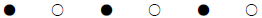
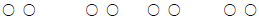
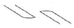
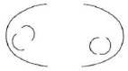
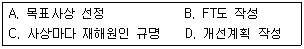
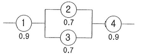
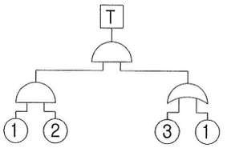
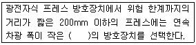

산업안전산업기사 (2012-05-20 기출문제)
1과목: 산업안전관리론
1. 다음 중 관료주의에 대한 설명으로 틀린 것은?
- 의사결정에는 작업자의 참여가 필수적이다.
- 인간을 조직내의 한 구성원으로만 취급한다.
- 개인의 성장이나 자아실현의 기회가 주어지지 않는다.
- 사회적 여건이나 기술의 변화에 신속하게 대응하기 어렵다.
(정답률: 83%)

2. 다음 중 안전태도 교육의 기본 과정에 있어 마지막 단계로 가장 적절한 것은?
- 권장한다.
- 모범을 보인다.
- 이해시킨다.
- 청취한다.
(정답률: 65%)
3. 다음 중 인간의식의 레벨(level)에 관한 설명으로 틀린 것은?
- 24시간의 생리적 리듬의 계곡에서 tension level은 낮에는 높고 밤에는 낮다.
- 24시간의 생리적 리듬의 계곡에서 tension level은 낮에는 낮고 밤에는 높다.
- 피로시의 tension level은 저하정도가 크지 않다.
- 졸았을 때는 의식상실의 시기로 tension level은 0이다.
(정답률: 77%)
4. 산업안전보건법상 안전ㆍ보건표지의 종류 중 “방독 마스크 착용” 은 무슨 표지에 해당하는가?
- 경고표지
- 지시표지
- 금지표지
- 안내표지
(정답률: 89%)
5. 강의계획에서 주제를 학습시킬 범위와 내용의 정도를 무엇이라 하는가?
- 학습목적
- 학습목표
- 학습정도
- 학습성과
(정답률: 76%)
6. 다음 중 기계적 위험에서 위험의 종류와 사고의 형태를 올바르게 연결한 것은?(오류 신고가 접수된 문제입니다. 반드시 정답과 해설을 확인하시기 바랍니다.)
- 접촉점 위험 - 충돌
- 물리적 위험 - 협착
- 작업 방법적 위험 - 전도
- 구조적 위험 - 이상온도 노출
(정답률: 42%)
7. 연평균 근로자 150명이 근무하는 어느 사업장에 1년간 5명의 사상자가 발생했다. 이 사업장의 연천인율은 약 얼마인가?
- 22.20
- 33.33
- 40.00
- 45.22
(정답률: 85%)
8. 산업안전보건법상 사업 내 안전 ㆍ 보건교육 중 채용시의 교육 내용에 해당하지 않는 것은? (단, 산업안전보건법 및 일반관리에 관한 사항은 제외 한다.)
- 사고 발생시 긴급조치에 관한 사항
- 유해ㆍ위험 작업환경 예방에 관한 사항
- 산업보건 및 직업병 예방에 관한 사항
- 기계ㆍ기구의 위험성과 작업의 순서 및 동선에 관한 사항
(정답률: 58%)
9. 다음 중 교육의 3요소에 해당되지 않는 것은?
- 교육의 주체
- 교육의 객체
- 교육결과의 평가
- 교육의 매개체
(정답률: 90%)
10. 다음 중 사고예방 대책의 기본원리를 단계적으로 나열한 것은?
- 조직 → 사실의 발견 → 평가분석 → 시정책의 적용 → 시정책의 선정
- 조직 → 사실의 발견 → 평가분석 → 시정책의 선정 → 시정책의 적용
- 사실의 발견 → 조직 → 평가분석 → 시정책의 적용 → 시정책의 선정
- 사실의 발견 → 조직 → 평가분석 → 시정책의 선정 → 시정책의 적용
(정답률: 64%)
11. 맥그리거(Mcgregor)의 X이론과 Y이론 중 Y이론에 해당되는 것은?
- 인간은 서로 믿을 수 없다.
- 인간은 태어나서부터 약하다.
- 인간은 정신적 욕구를 우선시 한다.
- 인간은 통제에 의한 관리를 받고자 한다.
(정답률: 74%)
12. 재해는 크게 4가지 방법으로 분류하고 있는데 다음 중 분류방법에 해당되지 않는 것은?
- 통계적 분류
- 상해 종류에 의한 분류
- 관리적 분류
- 재해 형태별 분류
(정답률: 57%)
13. 산업안전보건법상 안전관리자 직무에 해당하는 것은?
- 해당 작업과 관련된 기계ㆍ기구 또는 설비의 안전ㆍ보건 점검 및 이상 유무의 확인
- 소속된 근로자의 작업복ㆍ보호구 및 방호장치의 점검과 그 착용ㆍ사용에 관한 교육 ㆍ 지도
- 사업장 순회점검ㆍ지도 및 조치의 건의
- 해당 작업의 작업장 정리ㆍ정돈 및 통로확보에 대한 확인ㆍ감독
(정답률: 57%)
14. 안전교육 계획 수립시 고려하여야 할 사항과 관계가 가장 먼 것은?
- 필요한 정보를 수집한다.
- 현장의 의견을 충분히 반영한다.
- 안전교육 시행 체계와의 관련을 고려한다.
- 법 규정에 의한 교육에 한정한다.
(정답률: 87%)
15. 다음 중 무재해운동 추진 3요소가 아닌 것은?
- 최고 경영자의 경영자세
- 재해 상황 분석 및 해결
- 직장 소집단의 자주활동 활성화
- 관리감독자에 의한 안전보건의 추진
(정답률: 55%)
16. 작업지시 기법에 있어 작업 포인트에 대한 지시 및 확인 사항이 아닌 것은?
- weather
- when
- where
- what
(정답률: 86%)
17. 다음 중 안전점검의 직접적 목적과 관계가 먼 것은?
- 결함이나 불안전 조건의 제거
- 합리적인 생산관리
- 기계설비의 본래 성능 유지
- 인간 생활의 복지 향상
(정답률: 79%)
18. 다음의 사고발생 기초원인 중 심리적 요인에 해당하는 것은?
- 작업 중 졸려서 주의력이 떨어졌다.
- 조명이 어두워 정신집중이 안되었다.
- 작업 공간이 협소하여 압박감을 느꼈다.
- 적성에 안 맞는 작업이어서 재미가 없었다.
(정답률: 62%)
19. 군화의 법칙(群花의 法則)을 그림으로 나타낸 것으로 다음 중 폐합의 요인에 해당하는 것은?




(정답률: 72%)
20. 안전모의 일반구조에 있어 안전모를 머리모형에 장착하였을 때 모체내면의 최고점과 머리모형 최고점과의 수직거리의 기준으로 옳은 것은?
- 20mm 이상 40mm 이하
- 20mm 이상 50mm 미만
- 25mm 이상 40mm 이하
- 25mm 이상 50mm 미만
(정답률: 50%)
2과목: 인간공학 및 시스템안전공학
21. 다음 중 조종장치의 종류에 있어 연속적인 조절에 가장 적합한 형태는?
- 토글 스위치(Toggle switch)
- 푸시 버튼(Push button)
- 로터리 스위치(Rotary switch)
- 레버(Lever)
(정답률: 65%)
22. 다음 중 사업장에서 인간공학 적용 분야와 가장 거리가 먼 것은?
- 작업환경 개선
- 장비 및 공구의 설계
- 재해 및 질병예방
- 신뢰성 설계
(정답률: 55%)
23. 다음 중 FTA에 의한 재해사례연구의 순서를 올바르게 나열한 것은?

- A → B → C → D
- A → C → B → D
- B → C → A → D
- B → A → C → D
(정답률: 75%)
24. 다음 중 한 장소에 앉아서 수행하는 작업활동에 있어서의 작업에 사용하는 공간을 무엇이라 하는가?
- 작업공간 포락면
- 정상작업 포락면
- 작업공간 파악한계
- 정상작업 파악한계
(정답률: 65%)
25. 다음 중 작업장이 조명 수준에 대한 설명으로 가장 적절한 것은?
- 작업환경의 추천 광도비는 5 : 1 정도이다.
- 천장은 80 ~ 90% 정도의 반사율을 가지도록 한다.
- 작업영역에 따라 휘도의 차이를 크게 한다.
- 실내표면에 반사율은 천장에서 바닥의 순으로 증가 시킨다.
(정답률: 66%)
26. 다음 중 보험으로 위험조정을 하는 방법을 무엇이라 하는가?
- 전가
- 보류
- 위험감축
- 위험회피
(정답률: 60%)
27. 다음과 같은 시스템의 신뢰도는 약 얼마인가?

- 0.5152
- 0.6267
- 0.7371
- 0.8483
(정답률: 70%)
28. 다음 중 보전효과 측정을 위해 사용하는 설비고장 강도율의 식으로 옳은 것은?
- 설비고장 정지시간/설비가동시간
- 설비고장건수/설비가동시간
- 총 수리시간/설비가동시간
- 부하시간/설비가동시간
(정답률: 68%)
29. [그림]의 결함수에서 최소 컷셋(Minimal Cut Sets)과 신뢰도를 올바르게 나타낸 것은? (단, 각각의 부품 고장률은 0.01 이다.)

- (1, 3)
(1, 2), R(t) = 96.99% - (1, 3)
(1, 2, 3), R(t) = 97.99% - (1, 2, 3), R(t) = 98.99%
- (1, 2), R(t) = 99.99%
(정답률: 63%)
30. 다음 중 안전성 평가에서 위험관리의 사명으로 가장 적절한 것은?
- 잠재위험이 인식
- 손해에 대한 자금 융통
- 안전과 건강관리
- 안전공학
(정답률: 46%)
31. 작업원 2인이 중복하여 작업하는 공정에서 작업자의 신뢰도는 0.85로 동일하며, 작업 중 50%는 작업자 1인이 수행하고 나머지 50%는 중복 작업한다면 이 공정의 인간 신뢰도는 약 얼마인가?
- 0.6694
- 0.7225
- 0.9138
- 0.9888
(정답률: 40%)
32. 다음 중 인터페이스(계면)를 설계할 때 감성적인 부문을 고려하지 않으면 나타나는 결과는 무엇인가?
- 육체적 압박
- 정신적 압박
- 진부감(陳腐感)
- 관리감
(정답률: 65%)
33. 스웨인(Swain)의 인적오류(혹은 휴먼에러) 분류 방법에 의할 때, 자동차 운전 중 습관적으로 손을 창문밖으로 내어 놓았다가 다쳤다면 다음 중 이때 운전자가 행한 에러의 종류로 옳은 것은?
- 실수(slip)
- 작위 오류(sommission error)
- 불필요한 수행 오류(extraneous error)
- 누락 오류(omission error)
(정답률: 81%)
34. 다음 중 절대적으로 식별 가능한 청각차원의 수준의 수가 가장 적은 것은?
- 강도
- 진동수
- 지속시간
- 음의 방향
(정답률: 58%)
35. 다음 중 바닥의 추천 반사율로 가장 적당한 것은?
- 0 ~ 20%
- 20 ~ 40%
- 40 ~ 60%
- 60 ~ 80%
(정답률: 64%)
36. FT도에서 사용되는 기호 중 입력현상의 반대현상이 출력되는 게이트는?
- AND 게이트
- 부정 게이트
- OR 게이트
- 억제 게이트
(정답률: 77%)
37. 다음 중 조작자와 제어버튼 사이의 거리, 조작에 필요한 힘 등을 정할 때 가장 일반적으로 적용되는 인체측정자료 응용원칙은?
- 평균치 설계원칙
- 최대치 설계원칙
- 최소치 설계원칙
- 조절식 설계원칙
(정답률: 47%)
38. 다음 중 진동이 인간성능에 끼치는 일반적인 영향이 아닌 것은?
- 진동은 진폭에 반비례하여 시력이 손상된다.
- 진동은 진폭에 비례하여 추적 능력이 손상된다.
- 정확한 근육 조절을 요하는 작업은 진동에 의해 저하된다.
- 주로 중앙 신경 처리에 관한 임무는 진동의 영향을 덜 받는다.
(정답률: 58%)
39. 심장 박동주기 동안 심근의 전기적 신호를 피부에 부착한 전극들로부터 측정하는 것으로 심장이 수축과 확장을 할 때 일어나는 전기적 변동을 기록한 것은?
- 뇌전도계
- 심전도계
- 근전도계
- 안전도계
(정답률: 84%)
40. 다음 중 지침이 고정되어 있고 눈금이 움직이는 형태의 정량적 표시장치는?
- 정목동침형 표시장치
- 정침동목형 표시장치
- 계수형 표시장치
- 정열형 표시장치
(정답률: 62%)
3과목: 기계위험방지기술
41. 기계설비의 안전조건 중 구조부분의 안전화에서 검토되어야 할 내용이 아닌 것은?
- 가공의 결함
- 재료의 결함
- 설계의 결함
- 정비의 결함
(정답률: 56%)
42. 밀링가공 시 안전한 작업방법이 아닌 것은?
- 면장갑은 사용하지 않는다.
- 칩 제거는 회전 중 청소용 솔로 한다.
- 커터 설치 시에는 반드시 기계를 정지시킨다.
- 일감은 테이블 또는 바이스에 안전하게 고정한다.
(정답률: 86%)
43. 아세틸렌 용접시 역화를 방지하기 위하여 설치하는 것은?
- 압력기
- 청정기
- 안전기
- 발생기
(정답률: 80%)
44. 다음 ( )안에 들어갈 내용으로 옳은 것은?

- 30 mm 초과
- 30 mm 이하
- 50 mm 초과
- 50 mm 이하
(정답률: 74%)
45. 근로자에게 위험을 미칠 우려가 있는 원동기, 축이음 풀리 등에 설치하여야 하는 것은?
- 통풍장치
- 덮개
- 과압방지기
- 압력계
(정답률: 84%)
46. 프레스 가공품의 이송방법으로 2차 가공용 송급배출 장치가 아닌 것은?
- 푸셔 피더(pusher feed)
- 다이얼 피더(dial feeder)
- 로울 피더(roll feeder)
- 트랜스퍼 피더(transfer feeder)
(정답률: 56%)
47. 안전계수 6 인 와이어로프의 파단하중이 300kgf 인 경우 매달기 안전하중은 얼마인가?
- 50 kgf 이하
- 60 kgf 이하
- 100 kgf 이하
- 150 kgf 이하
(정답률: 83%)
48. 탁상용 연삭기에서 일반적으로 플랜지의 직경은 숫돌 직경의 얼마 이상이 적정한가?
- 1/2
- 1/3
- 1/5
- 1/10
(정답률: 81%)
49. 가공물 또는 공구를 회전시켜 나사나 기어 등을 소성가공 하는 방법은?
- 압연
- 압출
- 인발
- 전조
(정답률: 46%)
50. 무부하 상태 기준으로 구내 최고속도가 20 km/h 인 지게차의 주행시 좌우 안정도 기준은?
- 4% 이내
- 20% 이내
- 37% 이내
- 40% 이내
(정답률: 71%)
51. 동력 프레스기의 no-hand in die 방식의 방호대책이 아닌 것은?
- 방호울이 부착된 프레스
- 가드식 방호장치 도입
- 전용 프레스의 도입
- 안전금형을 부착한 프레스
(정답률: 48%)
52. 다음 중 기계설비에 의해 형성되는 위험점이 아닌 것은?
- 회전 말림점
- 접선 분리점
- 협착점
- 끼임점
(정답률: 78%)
53. 산업안전보건법상 산업용로봇의 교시작업 시작 전 점검하여야 할 부위가 아닌 것은?
- 제동장치
- 매니플레이터
- 지그
- 전선의 피복상태
(정답률: 67%)
54. 목제 가공용 둥근톱의 두께가 3mm 일 때, 분할날의 두께는?
- 3.3mm 이상
- 3.6mm 이상
- 4.5mm 이상
- 4.8mm 이상
(정답률: 77%)
55. 드럼의 직경이 D, 로프의 직경이 d 인 원치에서 D/d가 클수록 로프의 수명은 어떻게 되는가?
- 짧아진다.
- 길어진다.
- 변화가 없다.
- 사용할 수 없다.
(정답률: 62%)
56. 프레스의 일반적인 방호장치가 아닌 것은?
- 광전자식 방호장치
- 포집형 방호장치
- 게이트 가드식 방호장치
- 양수 조작식 방호장치
(정답률: 68%)
57. 2줄의 와이어프로 중량물로 달아 올릴 때, 로프에 가장 힘이 적게 걸리는 각도는?
- 30°
- 60°
- 90°
- 120°
(정답률: 66%)
58. 크레인의 훅, 버킷 등 달기구 윗면이 드럼 상부 도르래 등 권상장치의 아랫면과 접촉할 우려가 있을 때 직동식 권과방지장치의 조정 간격은?
- 0.01m 이상
- 0.02m 이상
- 0.03m 이상
- 0.⑤m 이상
(정답률: 42%)
59. 다음 중 위험기계 ㆍ 기계별 방호조치가 틀린 것은?
- 산업용 로봇 - 안전매트
- 보일러 - 급정지장치
- 목재가공용둥근톱기계 - 반발예방장치
- 활선작업에 필요한 절연용기구 - 절연용 방호구
(정답률: 77%)
60. 위험기계에 조작자의 신체부위가 의도적으로 위험점 밖에 있도록 하는 방호장치는?
- 덮개형 방호장치
- 차단형 방호장치
- 위치제한형 방호장치
- 접근반응형 방화장치
(정답률: 71%)
4과목: 전기 및 화학설비위험방지기술
61. 다음 중 섬락의 위험을 방지하기 위한 이격거리는 대지 전압, 뇌서지, 계폐서지 외에 어느 것을 고려하여 결정하여야 하는가?
- 정상전압
- 다상전압
- 단상전압
- 이상전압
(정답률: 59%)
62. 내압(耐壓)방폭구조에서 방폭전기기기의 폭발등급에 따른 최대안전틈새의 범위(mm) 기준으로 옳은 것은?
- ⅡA - 0.65 이상
- ⅡA - 0.5 초과 0.9 미만
- ⅡC - 0.25 미만
- ⅡC - 0.5 이하
(정답률: 37%)
63. 다음 중 내전압용절연장갑의 등급에 따른 최대사용 전압이 올바르게 연결된 것은?
- 00 등급 : 직류 750V
- 0 등급 : 직류 1000V
- 00 등급 : 교류 650V
- 0 등급 : 교류 1500V
(정답률: 67%)
64. 다음 중 열교환기의 가열 열원으로 사용되는 것은?
- 암모니아
- 염화칼슘
- 프레온
- 다우섬
(정답률: 66%)
65. 다음 중 유해 ㆍ 위험물질 취급 ㆍ 운반시 조치사항이 아닌 것은?
- 저장수량 이상 위험물질을 차량으로 운반할 때 가로 0.1m, 세로 0.3m 이상 크기로 표지하여야 한다.
- 위험물질의 취급은 위험물질 취급 담당자가 한다.
- 위험물질을 반출할 때에는 기후상태를 고려한다.
- 성상에 따라 분류하여 적재, 포장한다.
(정답률: 67%)
66. 다음 중 현장에 안전밸브를 설치할 경우의 주의사항으로 틀린 것은?
- 검사하기 쉬운 위치에 밸브축을 수평으로 설치한다.
- 분출시의 반발력을 충분히 고려하여 설치한다.
- 용기에서 안전밸브 입구까지의 압력차가 안전밸브 설정 압력의 3%를 초과하지 않도록 한다.
- 방출관이 긴 경우는 배압에 주의하여야 한다.
(정답률: 63%)
67. 다음 중 폭발등급 1 ~ 2등급, 발화도 G1 ~ G4 까지의 폭발성가스가 존재하는 1종 위험장소에 사용될 수 있는 방폭전기설비의 기호로 옳은 것은?
- d2G4
- m1G1
- e2G4
- e1G1
(정답률: 53%)
68. 다음 중 가연성 가스의 폭발범위에 관한 설명으로 틀린 것은?
- 상한과 하한이 있다.
- 압력과 무관하다.
- 공기와 혼합된 가연성 가스의 체적 농도로 표시된다.
- 가연성 가스의 종류에 따라 다른 값을 갖는다.
(정답률: 81%)
69. 다음 중 교류 아크 용접기에 의한 용접작업에 있어 용접이 중지된 때 감전방지를 위해 설치해야 하는 방호장치는?
- 누전차단기
- 단로기
- 리미트스위치
- 자동전격방지장치
(정답률: 72%)
70. 에틸에테르(폭발하한값 1.9vol%)와 에틸알콜(폭발 하한값 4.3vol%)이 4:1로 혼합된 증기의 폭발하한계(vol%)는 약 얼마인가? (단, 혼합증기는 에틸에테르가 80%, 에틸알콜이 20%로 구성되고, 르샤틀리에(Le chateller) 법칙을 이용한다.)
- 2.14vol%
- 3.14vol%
- 4.14vol%
- 5.14vol%
(정답률: 53%)
71. 다음 중 전선이 연소될 때의 단계별 순서로 가장 적절한 것은?
- 착화단계→순시용단 단계→발화단계→인화단계
- 인화단계→착화단계→발화단계→순시용단 단계
- 순시용단 단계→착화단계→인화단계→발화단계
- 발화단계→순시용단 단계→착화단계→인화단계
(정답률: 64%)
72. 다음 중 정전기로 인한 화재발생 원인에 대한 설명으로 틀린 것은?
- 금속물체를 접지했을 때
- 가연성가스가 폭발범위내에 있을 때
- 방전하기 쉬운 전위차가 있을 때
- 정전기의 방전에너지가 가연성물질의 최소착화 에너지 보다 클 때
(정답률: 63%)
73. 정전기의 방지 대책 방법으로 틀린 것은?
- 상대습도를 70% 이상으로 높인다.
- 공기를 이온화 한다.
- 접지를 실시한다.
- 환기시설을 설치한다.
(정답률: 59%)
74. 산업안전보건법상 전기기계ㆍ기구의 누전에 의한 감전 위험을 방지하기 위하여 접지를 하여야 하는 사항으로 틀린 것은?
- 전기기계ㆍ기구의 금속제 내부 충전부
- 전기기계ㆍ기구의 금속제 외함
- 전기기계ㆍ기구의 금속제 외피
- 전기기계ㆍ기구의 금속제 철대
(정답률: 72%)
75. 어떤 도체에 20초 동안에 100 쿨롱(C)의 전하량이 이동하면 이때 흐르는 전류(A)는?
- 200
- 50
- 10
- 5
(정답률: 69%)
76. 다음 중 주요 소화작용이 다른 소화약제는?
- 사염화탄소
- 할론
- 이산화탄소
- 중탄산나트륨
(정답률: 53%)
77. 다음 중 산업안전보건법상 급성 독성물질이 지속적으로 외부에 유출될 수 있는 화학설비에 파열판과 안전밸브를 직렬로 설치하고 그 사이에 설치하여야 하는 것은?
- 자동경보장치
- 차단장치
- 플레어헤드
- 콕
(정답률: 67%)
78. 다음 중 물 속에 저장이 가능한 물질은?
- 칼륨
- 황린
- 인화칼슘
- 탄화알루미늄
(정답률: 81%)
79. 다음 중 개방형 스프링식 안전밸브의 장점이 아닌 것은?
- 구조가 비교적 간단하다.
- 밸브시트와 밸브스템 사이에서 누설을 확인하기 쉽다.
- 증기용 어큐뮬레이션을 3% 이내로 할 수 있다.
- 스프링, 밸브봉 등이 외기의 영향을 받지 않는다.
(정답률: 66%)
80. 다음 중 아세틸렌 취급 ㆍ 관리시의 주의사항으로 틀린 것은?
- 폭발할 수 있으므로 필요 이상 고압으로 충전하지 않는다.
- 폭발성 물질을 생성할 수 있으므로 구리나 일정 함량 이상의 구리합금과 접촉하지 않도록 한다.
- 용기는 밀폐된 장소에 보관하고, 누출시에는 누출원에 직접 주수하도록 한다.
- 용기는 폭발할 수 있으므로 전도 ㆍ 낙하되지 않도록 한다.
(정답률: 80%)
5과목: 건설안전기술
81. 중량물을 들어올리는 자세에 대한 설명 중 가장 적절한 것은?
- 다리를 곧게 펴고 허리를 굽혀 들어올린다.
- 되도록 자세를 낮추고 허리를 곧게 편 상태에서 들어올린다.
- 무릎을 굽힌 자세에서 허리를 뒤로 젖히고 들어올린다.
- 다리를 벌린 상태에서 허리를 숙여서 서서히 들어올린다.
(정답률: 75%)
82. 가설통로의 설치기준으로 옳지 않은 것은?
- 경사가 20° 를 초과하는 경우에는 미끄러지지 아니하는 구조로 하여야 한다.
- 경사는 30° 이하로 하여야 한다.
- 수직갱에 가설된 통로의 길이가 15m 이상인 때에는 10m 이내 마다 계단참을 설치한다.
- 높이 8m 이상인 비계다리에는 7m 이내 마다 계단참을 설치한다.
(정답률: 72%)
83. 유해 ㆍ 위험방지계획서를 작성하여 제출하여야 할 규모의 사업에 대한 기준으로 옳지 않은 것은?
- 연면적 30000m2 이상인 건축물 공사
- 최대경간 길이가 50m 이상인 교량건설 등 공사
- 다목적댐 ㆍ 발전용댐 건설공사
- 깊이 10m 이상인 굴착공사
(정답률: 44%)
84. 현장에서 양중작업 중 와이어로프의 사용금지 기준이 아닌 것은?
- 이음매가 없는 것
- 와이어로프의 한 꼬임에서 끊어진 소선의 수가 10% 이상인 것
- 지름의 감소가 공칭지름의 7%를 초과하는 것
- 심하게 변형 또는 부식된 것
(정답률: 69%)
85. 프리캐스트 부재의 현장야적에 대한 설명으로 옳지 않은 것은?
- 오물로 인한 부재의 변질을 방지한다.
- 벽 부재는 변형을 방지하기 위해 수평으로 포개 쌓아 놓는다.
- 부재의 제조번호, 기호 등을 식별하기 쉽게 야적한다.
- 받침대를 설치하여 휨, 균열 등이 생기지 않게 한다.
(정답률: 77%)
86. 건설현장의 중장비 작업 시 일반적인 안전수칙으로 옳지 않은 것은?
- 승차석 외의 위치에 근로자를 탑승시키지 아니한다.
- 중기 및 장비는 항상 사용 전에 점검한다.
- 중장비는 사용법을 확실히 모를 때는 관리감독자가 현장에서 시운전을 해본다.
- 경우에 따라 취급자가 없을 경우에는 사용이 불가능하다.
(정답률: 81%)
87. 흙을 크게 분류하면 사질토와 점성토로 나눌 수 있는데 그 차이점으로 옳지 않은 것은?
- 흙의 내부 마찰각은 사질토가 점성토보다 크다.
- 지지력은 사질토가 점성토보다 크다.
- 점착력은 사질토가 점성토보다 작다.
- 장기 침하량은 사질토가 점성토보다 크다.
(정답률: 57%)
88. 산업안전보건관리비중 안전관리자 등의 인건비 및 각종 업무수당 등의 항목에서 사용할 수 없는 내역은?
- 교통통제를 위한 신호수 인건비
- 안전관리자 퇴직급여 충당금
- 건설용 리프트의 운전자
- 고소작업대 작업시 하부통제를 위한 신호자
(정답률: 61%)
89. 거푸집의 조립순서로 옳은 것은?
- 기둥 → 보받이내력벽 → 큰보 → 작은보 → 바닥 → 내벽 → 외벽
- 기둥 → 보받이내력벽 → 큰보 → 작은보 → 바닥 → 외벽 → 내벽
- 기둥 → 보받이내력벽 → 작은보 → 큰보 → 바닥 → 내벽 → 외벽
- 기둥 → 보받이내력벽 → 내벽 → 외벽 → 큰보 → 작은보 → 바닥
(정답률: 67%)
90. 양끝이 힌지(Hinge)인 기둥에 수직하중을 가하면 기둥이 수평방향으로 휘게 되는 현상은?
- 피로한계
- 파괴한계
- 좌굴
- 부재의 안전도
(정답률: 69%)
91. 콘크리트 유동성과 묽기를 시험하는 방법은?
- 다짐시험
- 슬럼프시험
- 압축강도시험
- 평판시험
(정답률: 72%)
92. 건설공사에서 발코니 단부, 엘리베이터 입구, 재료 반입구 등과 같이 벽면 혹은 바닥에 추락의 위험이 우려되는 장소를 가리키는 용어는?
- 비계
- 개구부
- 가설구조물
- 연결통로
(정답률: 70%)
93. 철골공사 작업 중 작업을 중지해야 하는 기후조건의 기준으로 옳은 것은?
- 풍속 : 10m/sec이상, 강우량 : 1mm/h이상
- 풍속 : 5m/sec이상, 강우량 : 1mm/h이상
- 풍속 : 5m/sec이상, 강우량 : 2mm/h이상
- 풍속 : 10m/sec이상, 강우량 : 0.5mm/h이상
(정답률: 83%)
94. 콘크리트 측압에 관한 설명 중 옳지 않은 것은?
- 슬럼프가 클수록 측압은 커진다.
- 벽 두께가 두꺼울수록 측압은 커진다.
- 부어 넣는 속도가 빠를수록 측압은 커진다.
- 대기 온도가 높을수록 측압은 커진다.
(정답률: 64%)
95. 건설공사 중 작업으로 인하여 물체가 떨어지거나 날아올 위험이 있을 때 조치할 사항으로 옳지 않은 것은?
- 안전난간 설치
- 보호구의 착용
- 출입금지구역의 설정
- 낙하물방지망의 설치
(정답률: 74%)
96. 2가지의 거푸집 중 먼저 해체해야 하는 것으로 옳은 것은?
- 기온이 높을 때 타설한 거푸집과 낮을 때 타설한 거푸집 - 높을 때 타설한 거푸집
- 조강 시멘트를 사용하여 타설한 거푸집과 보통 시멘트를 사용하여 타설한 거푸집 - 보통 시멘트를 사용하여 타설한 거푸집
- 보와 기둥 - 보
- 스팬이 큰 빔과 작은 빔 - 큰 빔
(정답률: 54%)
97. 토석이 붕괴되는 원인에는 외적요인과 내적인 요인이 있으므로 굴착작업 전, 중, 후에 유념하여 토석이 붕괴되지 않도록 조치를 취해야 한다. 다음 중 외적인 요인이 아닌 것은?
- 사면, 법면의 경사 및 기울기의 증가
- 지진, 차량, 구조물의 중량
- 공사에 의한 진동 및 반복 하중의 증가
- 절토 사면의 토질, 암질
(정답률: 74%)
98. 콘크리트 거푸집 해체 작업시의 안전 유의사항으로 옳지 않은 것은?
- 해당 작업을 하는 구역에는 관계 근로자가 아닌 사람의 출입을 금지해야 한다.
- 비, 눈, 그 밖의 기상상태의 불안정으로 날씨가 몹시 나쁜 경우에는 그 작업을 중지해야 한다.
- 안전모, 안전대, 산소마스크 등을 착용하여야 한다.
- 재료, 기구 또는 공구 등을 올리거나 내리는 경우에는 근로자로 하여금 달줄 또는 달포대 등을 사용하도록 할 것
(정답률: 62%)
99. 지게차 헤드가드에 대한 설명 중 옳지 않은 것은?(관련 규정 개정전 문제로 여기서는 기존 정답인 4번을 누르면 정답 처리됩니다. 자세한 내용은 해설을 참고하세요.)
- 상부틀의 각 개구의 폭 또는 길이가 16cm 미만일 것
- 앉아서 조작하는 경우 운전자의 좌석의 윗면에서 헤드 가드 상부틀 아랫면까지의 높이는 1m 이상일 것
- 서서 조작하는 경우 운전석의 바닥면에서 헤드가드의 상부틀 하면까지의 높이가 2m 이상일 것
- 강도는 지게차의 최대하중의 1배의 값의 등분포정 하중에 견딜 수 있는 것일 것
(정답률: 71%)
100. 연질의 점토지반 굴착 시 흙막이 바깥에 있는 흙의 중량과 지표 위에 적재하중 등에 의해 저면 흙이 붕괴되고 흙막이 바깥에 있는 흙이 안으로 밀려 불룩하게 되는 현상은?
- 히빙
- 보일링
- 파이핑
- 베인
(정답률: 72%)
의사결정에 작업자의 참여가 필수적인 이유는 다양합니다. 작업자들은 현장에서 문제를 직접 경험하고, 그에 대한 해결책을 가장 잘 알고 있기 때문에 그들의 의견을 수렴하는 것이 조직의 성과 향상에 도움이 됩니다. 또한 작업자들이 의사결정에 참여하면 조직 내부의 의사소통이 원활해지고, 직원들의 참여 의식과 역할감이 높아져 조직의 유대감과 성과 향상에도 도움이 됩니다.